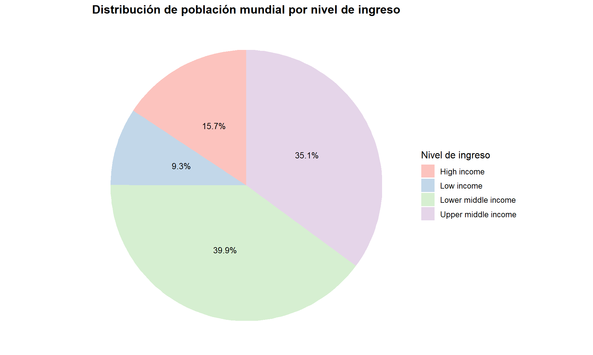
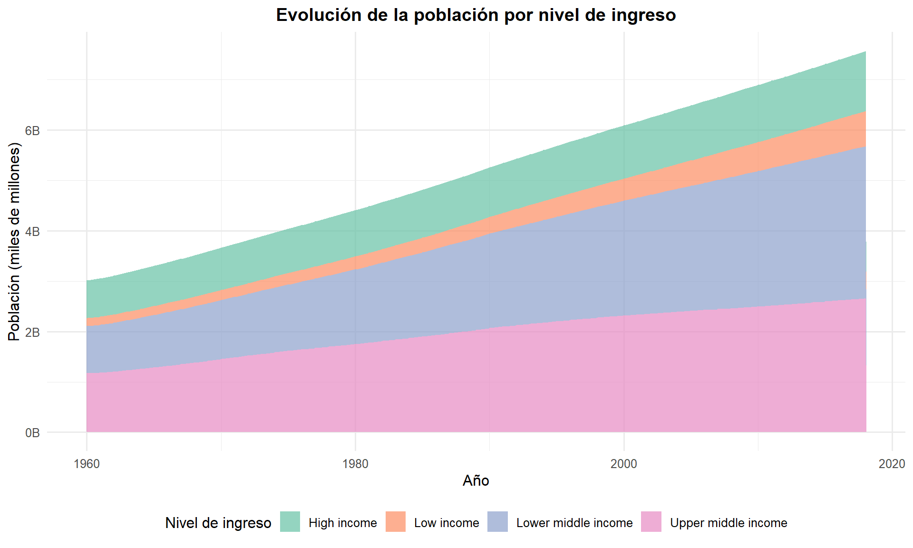
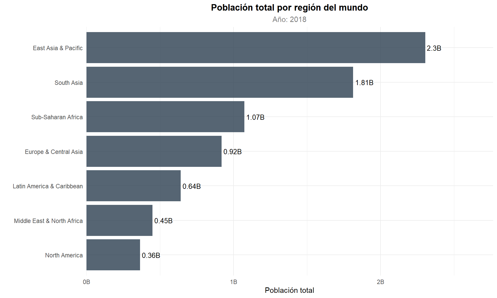
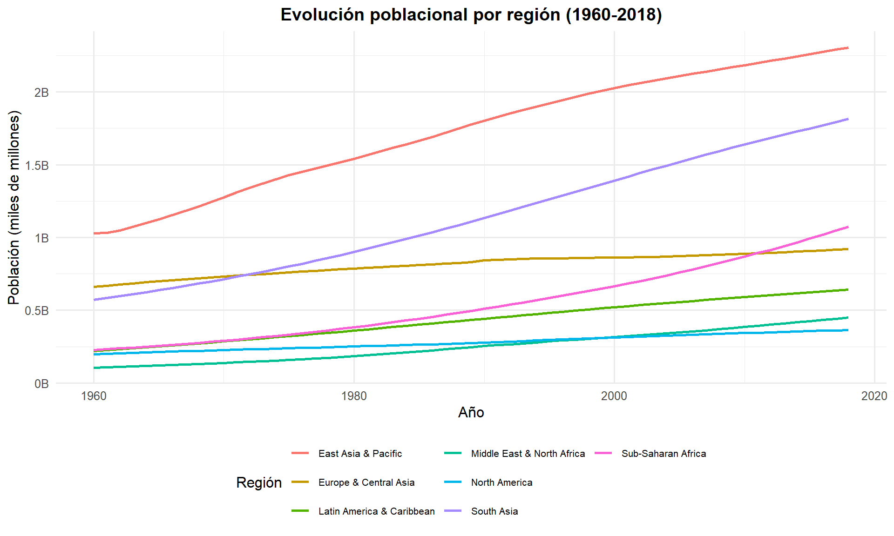

Capítulo 8 Análisis por Nivel de Ingreso y Región
8.1 Análisis por Nivel de Ingreso
pop_por_ingreso <- df_paises %>%
filter(year == max(year, na.rm = TRUE) & incomeLevel != "" & !is.na(population)) %>%
group_by(incomeLevel) %>%
summarise(n_paises = n(),
poblacion_total = sum(population, na.rm = TRUE),
poblacion_media = mean(population, na.rm = TRUE),
densidad_media = mean(pop_density, na.rm = TRUE),
.groups = "drop") %>%
arrange(desc(poblacion_total))
kable(pop_por_ingreso, caption = "Resumen poblacional por nivel de ingreso")| incomeLevel | n_paises | poblacion_total | poblacion_media | densidad_media |
|---|---|---|---|---|
| Lower middle income | 47 | 3022905169 | 64317131 | 151.8251 |
| Upper middle income | 60 | 2655635719 | 44260595 | 155.6264 |
| High income | 79 | 1186737873 | 15021998 | 743.5959 |
| Low income | 30 | 701964535 | 23398818 | 124.3727 |
ggplot(pop_por_ingreso, aes(x = "", y = poblacion_total, fill = incomeLevel)) +
geom_bar(stat = "identity", width = 1, alpha = 0.8) +
coord_polar("y") +
geom_text(aes(label = paste0(round(poblacion_total / sum(poblacion_total) * 100, 1), "%")),
position = position_stack(vjust = 0.5), size = 3.5) +
labs(title = "Distribución de Población Mundial por Nivel de Ingreso",
fill = "Nivel de Ingreso") +
theme_void(base_size = 12) +
theme(plot.title = element_text(face = "bold", hjust = 0.5)) +
scale_fill_brewer(palette = "Pastel1")
Figure 8.1: Proporción de la población mundial por nivel de ingreso
Se observa una concentración desproporcionada de la población mundial en los países de ingreso medio-bajo, influenciada por India y otras naciones densamente pobladas del sur de Asia y África Subsahariana. En contraste, los países de ingreso alto, a pesar de concentrar la mayor parte del PIB mundial, albergan una proporción pequeña de la población global. Esta disparidad entre concentración económica y demográfica constituye una de las tensiones estructurales de la economía mundial: la riqueza se genera en regiones con baja presión demográfica, mientras que la población crece más aceleradamente en economías con menor capacidad de generación de ingreso per cápita.
pop_por_ingreso_tiempo <- df_paises %>%
filter(incomeLevel != "" & incomeLevel != "Aggregates" & !is.na(population)) %>%
group_by(incomeLevel, year) %>%
summarise(poblacion_total = sum(population, na.rm = TRUE), .groups = "drop")
ggplot(pop_por_ingreso_tiempo,
aes(x = year, y = poblacion_total, fill = incomeLevel)) +
geom_area(alpha = 0.7, position = "stack") +
scale_y_continuous(labels = function(x) paste0(round(x / 1e9, 1), "B")) +
labs(title = "Evolución de la Población por Nivel de Ingreso",
x = "Año", y = "Población (miles de millones)", fill = "Nivel de Ingreso") +
theme_minimal(base_size = 12) +
theme(plot.title = element_text(face = "bold", hjust = 0.5),
legend.position = "bottom") +
scale_fill_brewer(palette = "Set2")
Figure 8.2: Evolución de la población agrupada por nivel de ingreso
El gráfico de áreas apiladas evidencia dos tendencias: (1) el crecimiento acelerado de la población en países de ingreso bajo y medio-bajo, cuyo incremento relativo ha sido significativamente mayor, y (2) el crecimiento moderado y desacelerado de los países de ingreso alto. Esto refleja las distintas etapas de la transición demográfica según el nivel de desarrollo económico.
8.2 Análisis por Región
pop_por_region <- df_paises %>%
filter(year == max(year, na.rm = TRUE) & region != "" & region != "Aggregates" & !is.na(population)) %>%
group_by(region) %>%
summarise(n_paises = n(),
poblacion_total = sum(population, na.rm = TRUE),
densidad_media = mean(pop_density, na.rm = TRUE),
.groups = "drop") %>%
arrange(desc(poblacion_total))
kable(pop_por_region, caption = "Población total por región del mundo")| region | n_paises | poblacion_total | densidad_media |
|---|---|---|---|
| East Asia & Pacific | 37 | 2304646596 | 1116.6935 |
| South Asia | 8 | 1814388744 | 538.3758 |
| Sub-Saharan Africa | 47 | 1074853734 | 114.7303 |
| Europe & Central Asia | 58 | 918793590 | 187.6355 |
| Latin America & Caribbean | 42 | 641357515 | 161.6159 |
| Middle East & North Africa | 21 | 448912859 | 319.9926 |
| North America | 3 | 364290258 | 408.1447 |
ggplot(pop_por_region,
aes(x = reorder(region, poblacion_total), y = poblacion_total)) +
geom_bar(stat = "identity", fill = "#2980B9", alpha = 0.8) +
geom_text(aes(label = paste0(round(poblacion_total / 1e9, 2), "B")),
hjust = -0.1, size = 3.5) +
coord_flip() +
scale_y_continuous(labels = function(x) paste0(round(x / 1e9, 1), "B"),
expand = expansion(mult = c(0, 0.2))) +
labs(title = "Población Total por Región del Mundo",
subtitle = paste("Año:", max(df_paises$year, na.rm = TRUE)),
x = "", y = "Población Total") +
theme_minimal(base_size = 11) +
theme(plot.title = element_text(face = "bold", hjust = 0.5),
plot.subtitle = element_text(hjust = 0.5, color = "grey50"))
Figure 8.3: Población total por región del mundo
Se observa una marcada concentración en Asia Oriental y el Pacífico junto con Asia del Sur, que en conjunto representan más del 60% de la población mundial, determinada principalmente por China e India. África Subsahariana se posiciona como la tercera región más poblada, con una tendencia de crecimiento que la proyecta como el principal contribuyente al crecimiento demográfico futuro. En el extremo opuesto, Medio Oriente y Norte de África junto con América del Norte presentan las poblaciones más reducidas, aunque con dinámicas distintas: la primera con tasas de crecimiento elevadas, y la segunda con crecimiento impulsado principalmente por migración.
pop_region_tiempo <- df_paises %>%
filter(region != "" & region != "Aggregates" & !is.na(population)) %>%
group_by(region, year) %>%
summarise(poblacion_total = sum(population, na.rm = TRUE), .groups = "drop")
ggplot(pop_region_tiempo,
aes(x = year, y = poblacion_total, color = region)) +
geom_line(linewidth = 1) +
scale_y_continuous(labels = function(x) paste0(round(x / 1e9, 1), "B")) +
labs(title = "Evolución Poblacional por Región (1960-2018)",
x = "Año", y = "Población (miles de millones)", color = "Región") +
theme_minimal(base_size = 12) +
theme(plot.title = element_text(face = "bold", hjust = 0.5),
legend.position = "bottom",
legend.text = element_text(size = 8)) +
guides(color = guide_legend(nrow = 3))
Figure 8.4: Evolución poblacional por región geográfica